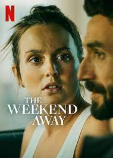
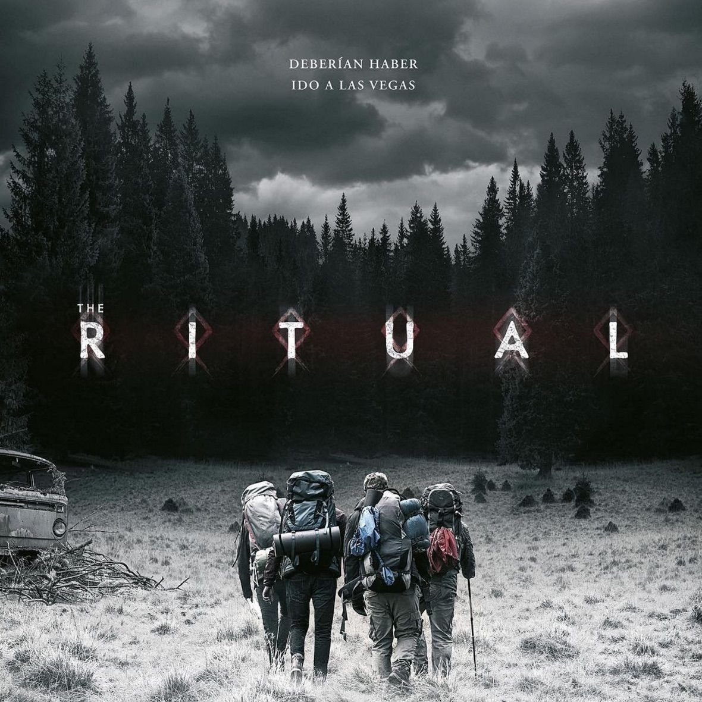

Series
Monstruos de krakovia
Kasia Adamik («1983») basó este relato fantástico con tintes sobrenaturales en las leyendas de la mitología eslava.
Segunda temporada los Bridgerton
La segunda temporada de 'Los Bridgerton' tomará como base 'El vizconde que amo', a su vez segunda entrega de la franquicia literaria de Julia Quinn que adapta la serie de Netflix. Eso supondrá que todo girará alrededor de la búsqueda de una esposa por parte de Anthony, el hermano mayor de los Bridgerton aquí interpretado por Jonathan Bailey.
Los guardianes de la justicia
Serie de TV (2022-). Después de mantener la tierra en paz durante 40 años, el superhéroe alienígena Marvelous Man deja una misión en manos de su amargado y violento teniente Knight Hawk y del idealista The Speed para detener la guerra nuclear. (FILMAFFINITY)
Películas
Perdidos en el ártico
Basada en hechos reales. 1909. La expedición danesa Alabama, liderada por el Capitán Ejnar Mikkelsen (Coster-Waldau) emprende una misión para demostrar que Groenlandia no está dividida en dos trozos de tierra y refutar el reclamo de Estados Unidos sobre el territorio. Dejando atrás a su tripulación, le acompañará en el viaje, que llegarán a realizar incluso a pie por el hielo, el inexperto Iver Iversen (Joe Cole).
Fin de semana en Croacia
Cuando su mejor amiga desaparece durante un viaje de chicas a Croacia, Beth se apresura para averiguar qué sucedió. Pero cada pista la lleva a más engaños.
The ritual
Cinco amigos, Phil, Dom, Hutch, Luke y Rob, se encuentran en un pub y discuten los planes para unas vacaciones en grupo. Rob sugiere ir de excursión a Suecia, pero los demás no están de acuerdo. Después, Luke y Rob se van a comprar alcohol, pero interrumpen un asalto en curso. Luke se esconde mientras los ladrones acosan a Rob por sus objetos de valor.